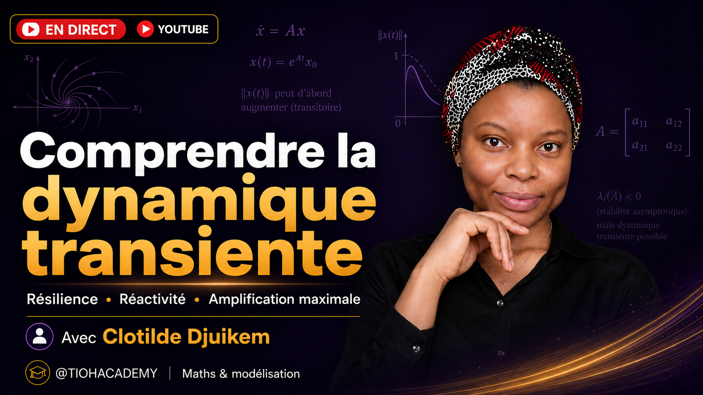

Présentation scientifiqueRésilience, réactivité et amplification maximale
Nous partons d’un équilibre et de la linéarisation \(\dot{x}=Ax\) pour distinguer trois questions : le système revient-il à l’équilibre, à quelle vitesse y revient-il et peut-il d’abord s’éloigner fortement de cet équilibre ?
Résilience
\(\rho=-\alpha(A)\)
avec \(\alpha(A)=\max_i \operatorname{Re}(\lambda_i)\)
Réactivité
\(r=\lambda_{\max}\!\left(\frac{A+A^{\mathsf T}}{2}\right)\)
croissance instantanée maximale
Amplification
\(G_{\max}=\sup_{t\ge0}\|e^{At}\|_2\)
gain transitoire maximal
Ce que vous allez comprendre
- Pourquoi un système stable peut malgré tout subir une forte croissance transitoire.
- Comment les valeurs propres mesurent le comportement asymptotique et la vitesse de retour.
- Comment la partie symétrique de la matrice détecte la croissance initiale.
- Comment les valeurs singulières de \(e^{At}\) donnent l’amplification maximale.
- Pourquoi ces notions sont utiles en épidémiologie, en écologie et en ingénierie.